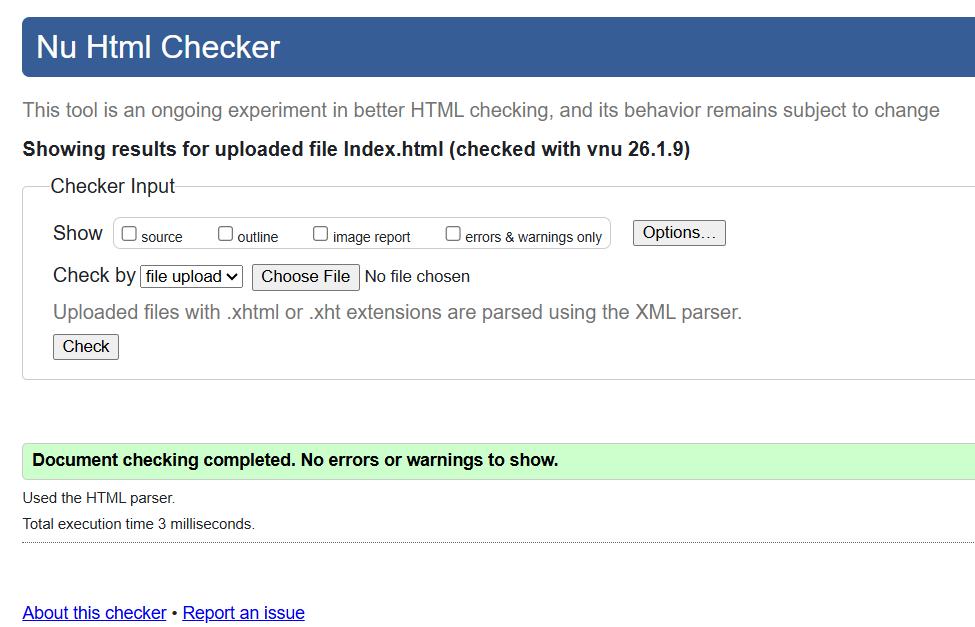
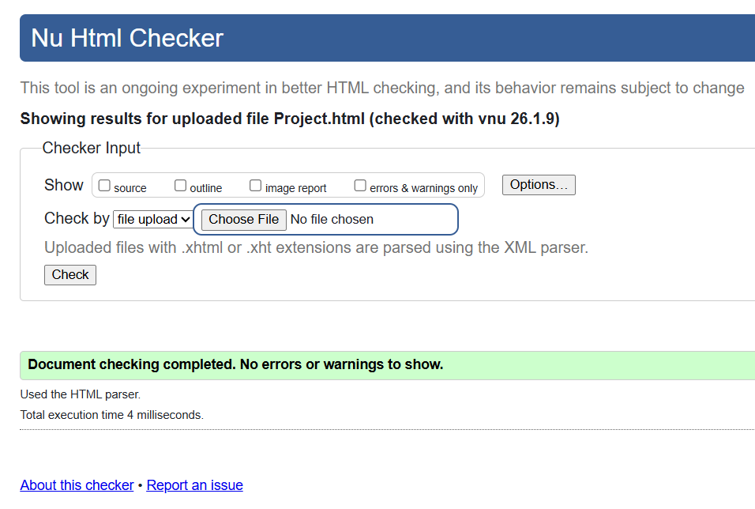
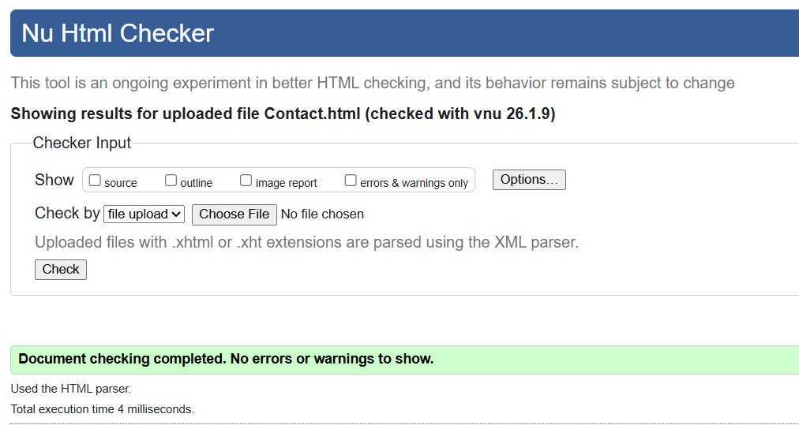
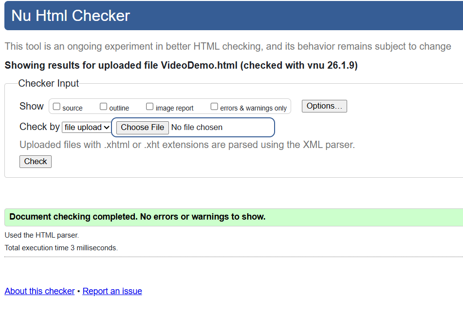
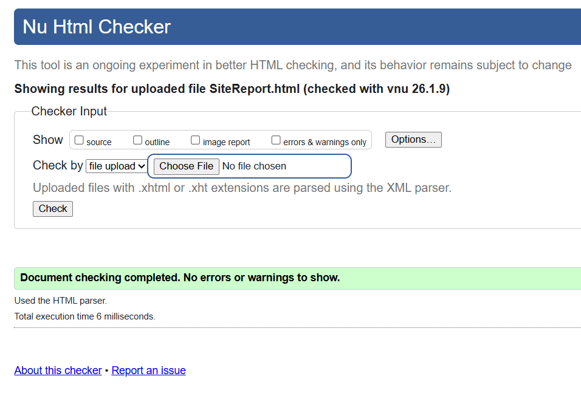
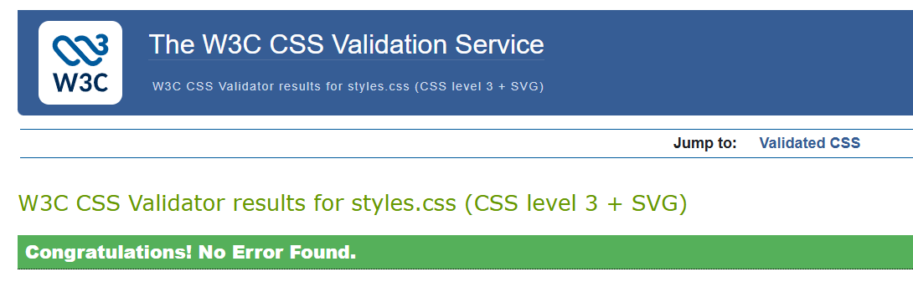
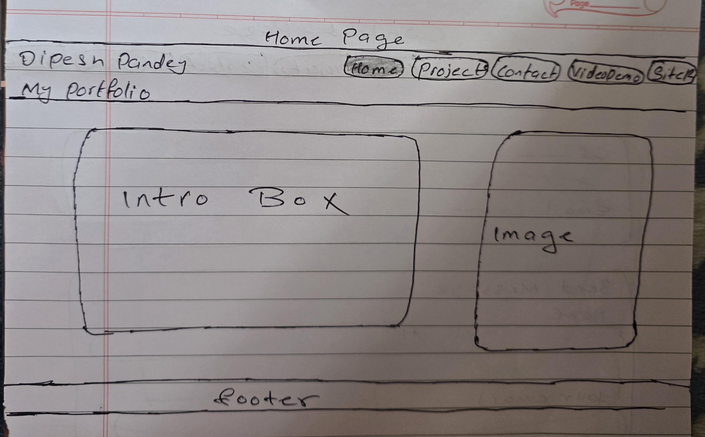
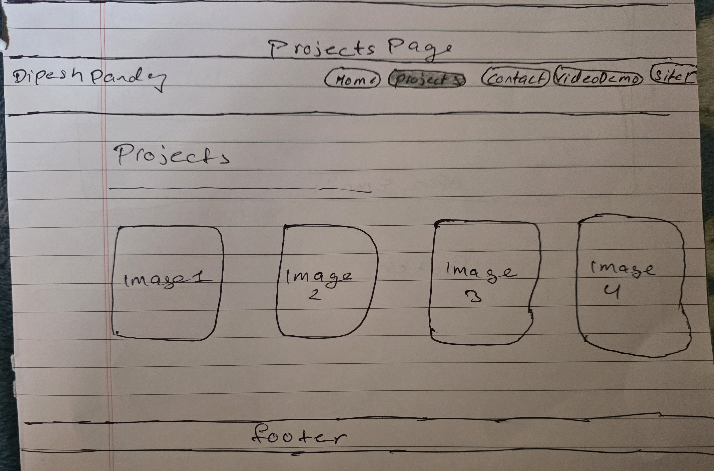
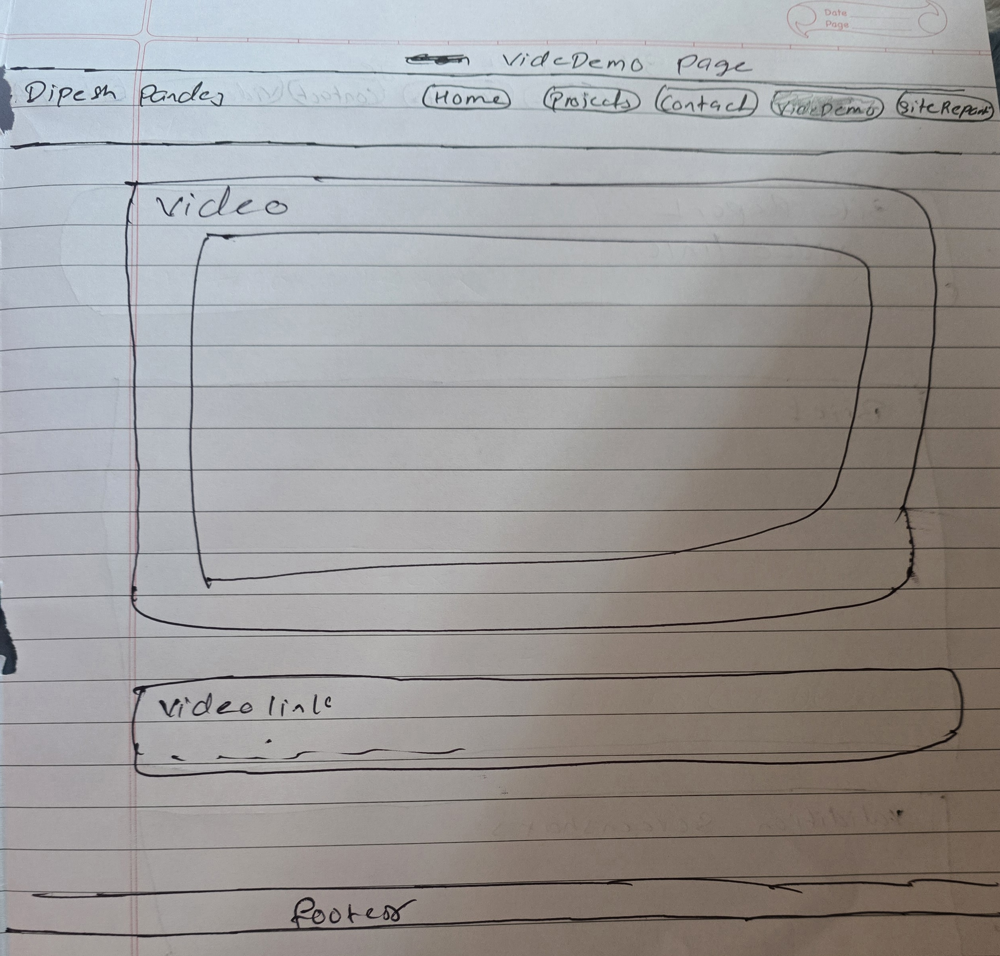
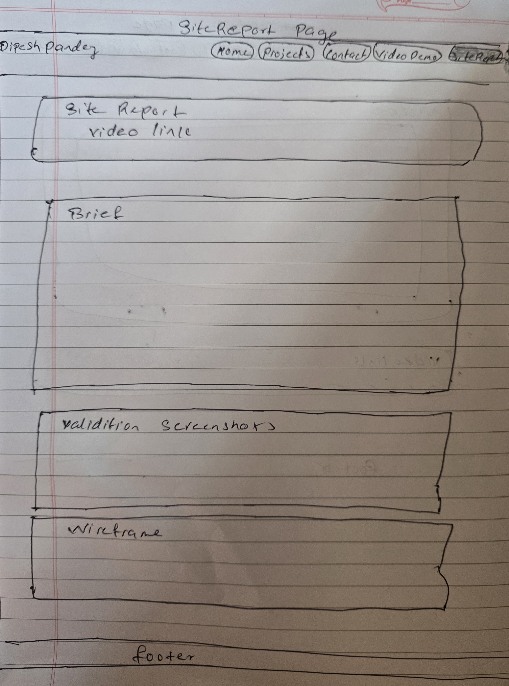

Site Report
Video URL: https://youtu.be/6ADsBOWcjZY
Brief about assignment (250+ words)
It's me Dipesh Pandey, I am very thankful to Mr. Ankit Thapa sir, our Web Development teacher,for his guidence and help. He gave me the knowledge I needed to finish this assignment on my own. I also want to thank Nami College for including this creative assignment in our course. Working on it was fun and taught me a lot.
The current site report describes the process of my personal portfolio website planning, design and development as part of the CSY1063 Web Development assignment. The primary objective of this project was to create and develop professional, simple and original portfolio site with just HTML and external CSS and no templates, no frameworks, no Bootstrap, no internal CSS or or inline styling. This website has been created with the intention of demonstrating my profile, projects, and contact information in a clear and user-friendly manner with observing all the assignment rules and marking criteria.
The design of this website was kept normal with soft background colors, clean, and balanced spacing to make the content easy to read and visually comfortable. HTML elements such as header, nav, main, section, article, and footer were used to give the website a proper structure and improve accessbility.CSS Flexbox and Grid were used to handle layout and alignment, and media queries were added to make sure the website looks responsive on different screen sizes and devices.
During development, I faced challenges such as overlapping elements, alignment problems image positioning issues, and form layout errors. These issues were solved by carefully checking the HTML structure and adjusting margins, padding, and display properties in CSS. This errors helped me to understand the importance of writing clean code, using proper indentation, and testing regularly in the browser. Through this project, I improved my understanding of HTML structure, external CSS styling, responsive design, and problem- solving skills. The final result is a simple, original, and professional portfolio website that meets all the assignment requirements and presents my work in a clear and organised manner.
AI / Sources acknowledgement
AI tools were used for guidance, learning support, and debugging during development. All design decisions and final code implementation were completed by me.
Validation screenshots
HTML and CSS Validation screenshots
Index.html validation screenshot
-
Project.html validation screenshot
 -
Contact.html validation screenshot
 -
VideoDemo.html validation screenshot
 -
SiteReport.html validation screenshot
 -
Styles.css validation screenshot

WireFrames
-
Home page WireFrame
 -
Projects page WireFrame
 -
Contact page WireFrame

-
VideoDemo page WireFrame
 -
SiteReport page WireFrame
